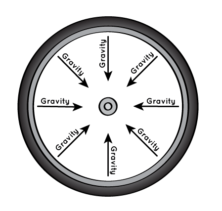

Circles are everywhere around us. Have a look at your house and you will see almost everything in circular shapes from the food that you eat such as rotis, pizza, etc to the utensils, bottles, gas cylinders, light bulbs, camera lenses, coins, wheels of your vehicles and many more. Not only around us but the whole universe is in circular form. Hold on! Before you argue that spheres and cylinders are not circles, they are circles. In fact, spheres are 3D circles meanwhile cylinders are elongated 3D circles.
The reason behind everything being circular is simple; it is the most efficient shape. Here's a sleek example for circles being so efficient. Imagine having your vehicles' wheels of non-circular shapes such as triangular, rectangular or whatsoever. It would take forever to travel even a very short distance. The other perfect example would be a ring. If a ring was again of different shapes rather than a circle, you would not be able to put it so easily. The edges of your ring would gradually cut your fingers making you pay for the wrong shape!
Talking about the universe, the planets, the sun, the moon are all spherical due to the gravitational pull. We all know that gravity pulls everything towards the center of a mass. With their large body and internal heating from radioactive elements, they behave like a fluid, and over long periods of time they succumb to the gravitational pull from their center of gravity.
The foods that we consume/prepare through are all round. Well the reason being is: circular vessels are uniform and help in easy spread of the flame in all directions and prevent heat loss rather than any other shaped vessels. Also, as Circles have no sharp edges while boiling the force developed by the steam is distributed evenly avoiding liquid coming out of the vessel from one side. Lastly, stirring and cleaning is easier; because circles have no edges reducing the maximum friction possible.
There are millions of other instruments which are circular in shape. The above mentioned phenomenon or the instruments are the prior applications of circles. In short, the circle is mostly used in our daily lives due to its perfect shape (without edges). Therefore it is no myth that everything around is circular.